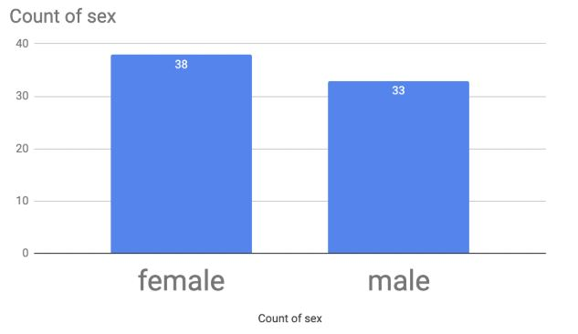
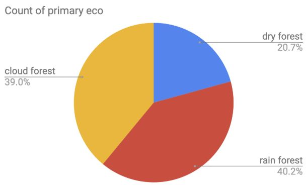
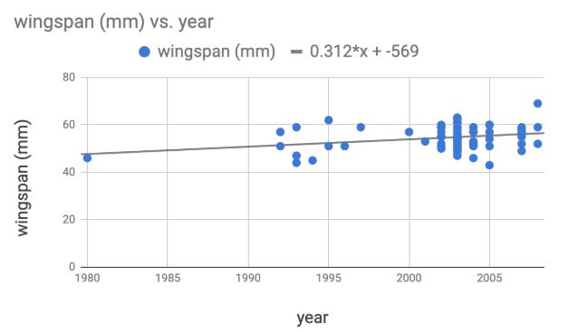
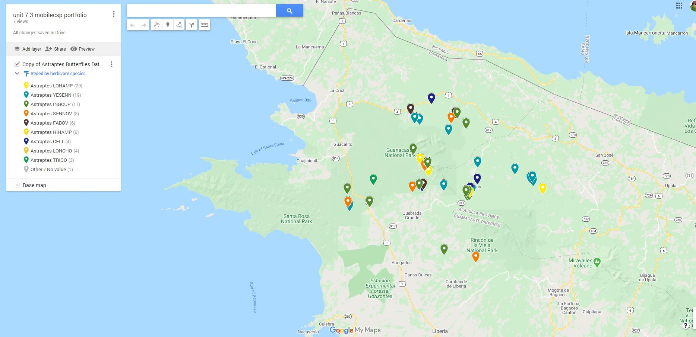
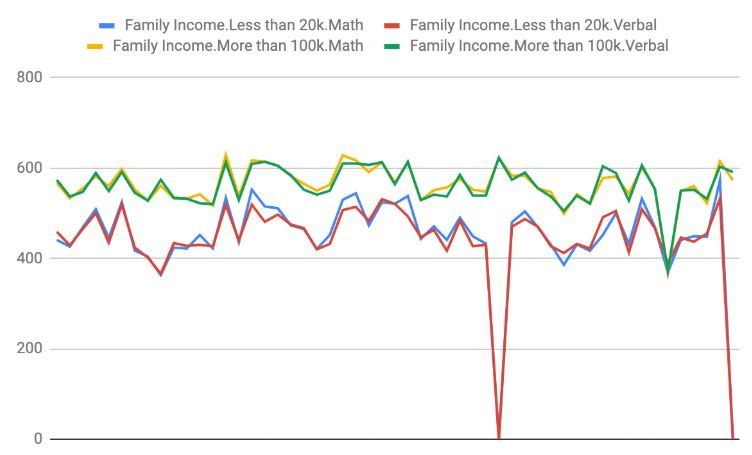
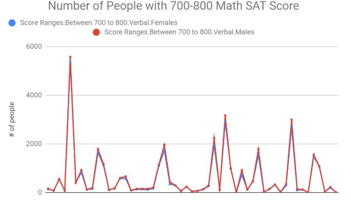
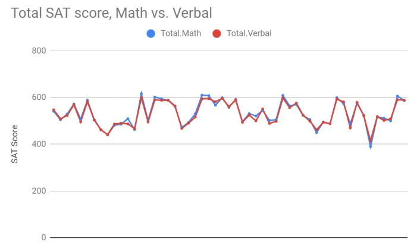
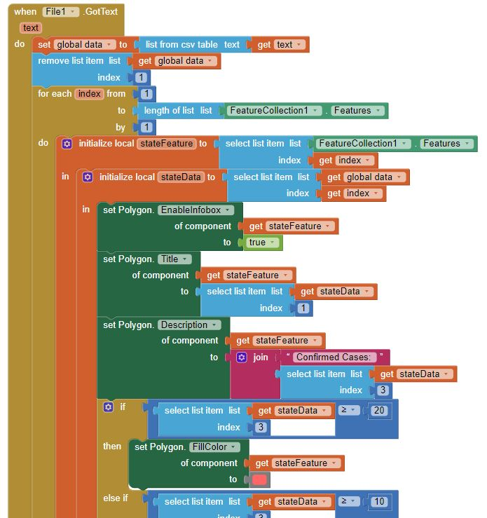
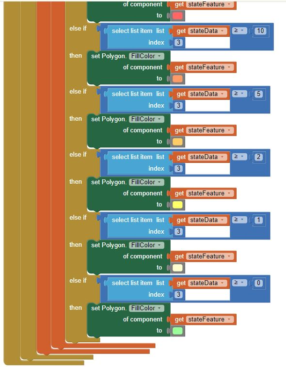
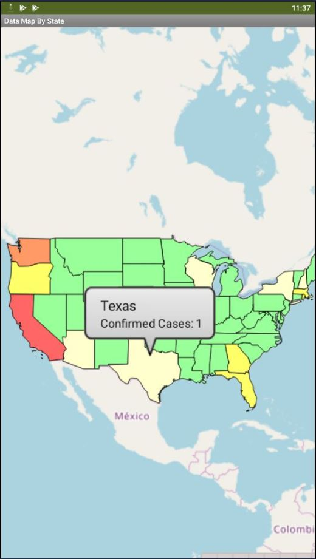

7.2 - Big Data
1. Choose one of the data sets listed above in the Activity section or one that you find on your own and give a brief description of it. What specifically were the types of data (text, sounds, transactions, etc.) included in the data set you chose?
Within the data set found in reddit's thread r/dataisbeautiful, within this thread contains many data sets that are uploaded by the users of reddit demonstrating trends with a broad spectre of content, from timlines of average color of frams of 2020 Academy Award contenders, to a graph that displays the european covid-19 infection timeline. The types of data included, transitions of a subject over time through the use of graphs, maps, images, spreadsheets, etc. Can be found here: r/DataIsBeatiful
2. What new facts did you learn when exploring the data set? List at least 3 facts.
From the three things that I learned while exploring the data sets within reddit, one thing I learned is that the keyword "coronavirus" is the most searched word on twitter, another thing I learned is that what women want is mutual attraction or love from their lover, when women were asked to evaluate 18 factors in choosing a mate. The third thing I learned is that these data sets are affected by major events/ situations as the most common datasets I see when I explore through the page is that of the coronavirus, giving data on the rate of infection or amount of people infected with the virus throughout different locations around the world.
3. Write a question you have about the data set you chose. Now, convert that question into a hypothesis (a statement) with your prediction about the data.
Question: "How many reddit users actually participate on peoples uploads by commenting or uploading their own content?"
Hypothesis: The majority of reddit users will most likely not participate or interact with reddit through uploading content or commenting on other users posts. Data set: Reddit User Participation
4. Identify at least one security and/or privacy concern that is associated with the data in the data set you chose?
One privacy concern can relate to companies using user's data who have commented or uploaded content for their own profit or to use against you.
5. If your data set included a visualization, explain the purpose of the visualization. How would you change or improve the visualization? If it did not include a visualization, describe one that you think would be useful in understanding the data.
The data set included a pie chart with the use of legends, a header, and footnote. The purpose of this visulization is to demonstrate the users who actually comment or post to those that are lurkers, or people who only view uploads and do not participate in uploading or providing feedback to uploaders. Overall the visualization covers everything needed for data, the only thing I would change is the way it looks.
7.3 - Visualizing Data
1. (Activity 2) Write a spreadsheet formula that calculates the average elevation for the data in this spreadsheet. Write your formula and the result found in your portfolio.
SUM of (total numbers) / count of number used to add together. or "=AVERAGE(Colum:Rows)"
2. (Activity 2) Are there more male or female butterflies in this data set? Include a screenshot of your chart to answer this question. What kind of data is in your chart?
There are more female butterflies in this data set. There are five more females than there are males in this data derived from the Astraptes Butterflies Data Set. This data is represented through a bar graph that scales in correlation with the number of females or males there are.

3. (Activity 2) Which ecological environment (primary eco column) do these butterflies like to live in? There is no clear winner in this question so give the percentages in each ecological environment in a screenshot of your chart. What kind of data is in your chart?
These butterflies like to live in cloud forests, in which 39.0% of these butterflies occupy in this ecological environment.

4. (Activity 2) Come up with a 3rd question and use charting to answer it. Include the screenshot. What kind of data is in your chart?
How does the wingspan of the butterflies change as time passes? Over time the wingspan of these butterflies increases. This data is represented using a scatterplot or point graph where a trend line reveals how the wingspan changes over time, in this case it is increasing in millimeters over time.

5. (Activity 3) Include a screenshot and link of the map you created for this data.
Google Maps

7.4 - Data Visualization Project
1. Which data set did you select and why did you choose it?
I chose the data set that covered school scores, specifically the SATs within the United States. I chose this because I am able to relate to it as I am in school.
2. Summarize the data included, being specific about the types of data (text, sounds, transactions, etc.) included. Make sure you list the title and the website (URL) where you found the data.
The data includes the average SAT score people from across the country recieved as well as the scores recived from people with different income levels, gender differences, subject of the SATs, etc. It is a text data which the data is found within a spreadsheet.
3. List your 3-5 hypotheses and the data visualizations that you created for each. (Include the visualizations as images on your portfolio or provide a link to them shared with your instructor.)
Hypothesis 1: People with higher income are most likely to have higher SAT scores in year 2015,

Hypothesis 2: There are more males than females with 700-800 SAT score in Math.

Hypothesis 3: People around the United States score better in the math subject compared to verbal.

4. Explain how collaborating with a partner helped you gain new insight or knowledge about the data.
Collaborating with a parter helped me gain new insight or knowledge about data by demonstrating a different perspective in seeing a data set, being able to see what type of questions and hypotheses they can come up with gives me more perspective on data.
5. Identify at least one security and/or privacy concern that is associated with the data in the data set you chose.
A privacy concern that is associated with the data in the data set I chose is that, many of the students family income can become exposed to firms that target a specific range of people due to their income.
7.5 - Data Map App
1. How and why are files used as a data abstraction in this app?
Files are used as a data abstration to create a more general and easy to understand the data found in a data set. This is possible by converting the data into 50-string CDCs.
2. Explain the List of Lists data abstraction used in this app.
The list of list data abstraction in another sense can be seen as big data, in which this case, there are many lists inside one big list. In this app a list of list data abstraction is used to record the different states in the United States. There are then number of cases found within each state, emphasizing on the list within the list. This abstraction allows many lists to be intergrated and utilized in an orderly or organized method so that it is clear to read for the user and the programmer.
3. When and why do programmers use APIs?
Programmers use APIs to get a set of data that connect with what they are requesting. For example, to find the stats within a regions weather a programmer must access an API that fetches that data and displays it within the app the programmer is trying to make.
4. Provide screenshots of your enhancement projects. (At least ONE and TWO)
 

7.7 - Machine Learning and Arificial Intelligence
1. In the Teachable Machine activity, what inputs were easy for the program to learn to distinguish and what inputs were more difficult?
Inputs that were easy for the program to learn to distinguish was different ojects that had different shapes, while inputs with the same color did the machine have a harder time to learn to distinguish the different objects.
2. Search online and identify another application area for AI or machine learning besides the ones described in this lesson. Is this task hard easy for humans but hard for computers to do?
Another example for an AI is a robotic spike that detects tomates from a salad and attempt to remove the tomates from the salad. Seperating tomates is a relatively easy task for humans but it takes a lot of effort and energy to move and sort through a salad bowl for every tomato. For a computer it is harder to find tomatoes buried under lettuces as it no longer would be visible to be detected. Reference: A Robot That Picks Tomatoes Out of Your Salad
3. In this lesson you saw some examples of gender bias in a machine translation program. Identify another form of unconscious bias and give an example of how it could affect a computer program. Explain how that could be a harmful effect on society, economy, or culture.
Another form of unconscious bias is the data or recommendation a user gets after searching up an item on an online store or browser. This can be harmful in many ways, for example for a person was curious about guns, so they searched up how much one costs, then everything else on his device is recommeneding this person different options of guns to buy, now this guy if seen by others, is a potential threat to the safety of the nation, even if his intent was out of curiousity.
7.8 - Impacts of CS (Who owns the bits?)
1. In your own words, define the concept of copyright. Why should all Internet users be aware of copyrighted material?
Copyright is the privilege a firm, user, etc gets for creating something. Copyright gives them immunity from having other people take or steal their work for their own gain. It is a legal method of protecting ones intelligent property, or an author's work.
2. What is the difference between digital and printed documents that makes it easier to violate copyright law with digital ones?
Digital documents can be accessed on web browsers and restrict people from replicating that document online, where as a printed document is a restriction of replicating that document physically. It is easier to violate copyright law with digital documents as it can be screenshotted, recorded, and replicated as long as it is not reuploaded to the internet. As long as it is not found on the public web it can not be tracked.
3. What is a peer-to-peer architecture? Provide an example of at least one well-known peer-to-peer network.
Peer-to-peer architecture is a network of peers, in which people can access a specific item or file from another peer directly. Files can be shared between users directly. One well known peer-to-peer network is the communication app Discord.
4. What is the DMCA and why is it significant to copyright, especially with regards to electronic works (documents, images, videos, etc.)?
The DMCA is short for Digital Millenium Copyright Act, which provides protection of an author's copyright until 70 years after the death of the author. The DMCA applies to digital work as well as physical work. It allows protection of people's documents and files from piracy.
5. What are Open Access and Creative Commons? How have they impacted the sharing of digital information?
An Open Access license is a document that is meant for public use, the right to allow the public to access. A creative commons license is a public copyright license that enable the free distribution of an otherwise copyrighted work. Many people are able to gain higher quality resoucres for eduaction, researching, video editting with Open Access and Creative Commons.
6. The Blown to Bits book is released under a Creative Commons (CC) license, specifically the Attribution-NonCommercial-ShareAlike 3.0 license. What does this license allow people other than the authors to do? What is the relationship between the original Blown to Bits book and the newer, Blown to Bits (version 2.0) book? Did the authors of the newer version stay true to the CC license? How can you tell? (Optional) If your favorite book or movie was released with a CC license, how would you change it?
This license allow others to share, use and build upon the book as long as it is not used for monetary gain. The second book has more content than the original one, in which more information was added one, possible because of the CC license. They stayed true to the CC license as it is not for commerical but educational use.
7. The chapter describes three peer-to-peer networks, each of which can be used to share copyrighted works illegally. Why did the courts find that Napster and Grokster were liable for the illegal activities of it's users, while BitTorrent is not?
Napster and Grokster were liable for the illegal activities because they did not have legal licenses that backed up their usages, while BitTorrent was found to have many legal means to protect itself.
8. What effect have streaming services such as Netflix and Spotify had on illegal downloading activities?
Due to the fact that these streaming services are not free but instead cost monthly subscription fees, people look towards illegally downloading activities as an alternative, as it is free. There will be more illegal downloading activities as a result of having streaming services.
9. Why was it important for Jack Andraka to have access to research articles? In general, how has access to information helped to identify problems, develop solutions, and disseminate results?
It is important for Jack Andraka to have access to research articles so that a hypothesis can be experimented on. Without research a claim cannot be challenged, revised, or improved on. Access to information helped to identify problems, develop soutions, and disseminate results as researchers are able to use theses data to come to a better understanding of something.
10. What is your responsibility as an app developer in regards to the fair use of copyrighted works such as images and music? Give one example use of a copyrighted work in an app that follows fair use guidelines and one example that violates fair use guidelines.
As an app developer my responsibility in regards to the fair use of copyrighted works such as music and images, is to not take any copyrighted images or music for the use of my own app. Example, the use of a person's video on youtube can be used in an app that is used for criticism, news reporting, education, research, etc. One example that violates copyright is taking a copyrighted song and using it as the background music of my app.
11. In your opinion, are YouTube users violating copyright terms when they make lyric videos? Why or why not?
As long as they are not monitizing the video I do not think they are violating the copyright terms under fair use, as the purpose is only to provide viewers with a clarified verson of a song by putting up the lyrics along with the music.